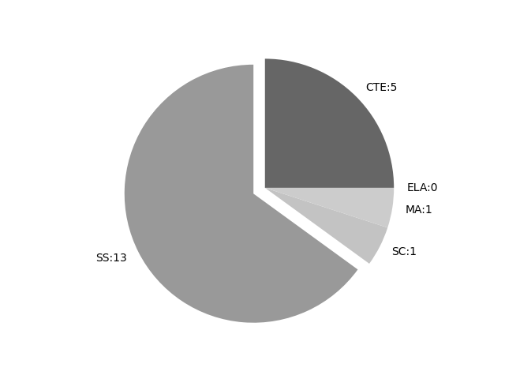

South Dakota
Report date: 2021-07-08
The frequency of all keywords found in this state's standards: 20
Comparable state score: 0.412 (median: .303, SD: .324)
The frequency above is the sum of all keywords found in all of this state's four core academic standards and the state's CTE/career standards. This total count is broken down by keyword and discipline area below.
On this site, 'comparable scores' are calculated as: keywords found divided by total words in the standards document(s) - multiplied by 100,000. The comparable scores attempt to normalize data, accounting for very different sizes of curriculum guidance documentation.
Frequencies by keyword or phrase:- spatial: 7
- Geographic Information System: 2
- geospatial: 8
- GIS: 3

Frequencies by discipline area: - SS: 13
(Comp: 5.061) - SC: 1
(Comp: 0.332) - MA: 1
(Comp: 0.094) - ELA: 0
(Comp: 0.0) - CTE: 5
(Comp: 0.213)
Review the standards document(s) used in this machine search: external link
Examples of keyword use by discipline area (and document): - CTE
- AG_18504_NaturalResources.pdf, page:0, position:1929
related to, managing, using, protecting, and conserving natural resources. Classroom and laboratory content should be enhanced by utilizing up to date equipment and technology, such as Geographic Information System (GIS) software. Biology, statistics, algebr - AG_18504_NaturalResources.pdf, page:0, position:1959
using, protecting, and conserving natural resources. Classroom and laboratory content should be enhanced by utilizing up to date equipment and technology, such as Geographic Information System (GIS) software. Biology, statistics, algebra, En - AG_18504_NaturalResources.pdf, page:1, position:873
Content One Recall FNR 1.1 Explain resource management components to establish or enhance relationships in natural resource systems. Level 3 Strategic Thinking FNR 1.2 Apply Geographic Information Systems (GIS) skills to natural resource activities. - Community-Regional-Planning.pdf, page:3, position:308
CRP 4 Learners will learn and practice the uses of Geographic Information Systems (GIS) Webb Level Sub-indicator Integrated Content Level 1: Recall CRP 4.1 Define GIS and list its capabilities Level 1: Recall - Community-Regional-Planning.pdf, page:3, position:215
Government & Public Administration Course: Community and Regional Planning CRP 4 Learners will learn and practice the uses of Geographic Information Systems (GIS) Webb Level Sub-indicator Integrated Cont
- MA
- 0521-Math-Standards.pdf, page:9, position:1319
in combined sets, or counting the number of objects that remain in a set after some are taken away. 2. Students describe their physical world using geometric ideas (e.g., shape, orientation, spatial relations) and vocabulary. They identify, name,
- SC
- sdSciStnd.pdf, page:24, position:2595
DCI: ESS1.B; CCC: ScaleProp., Technology) MS-ESS2-1 Develop a moprocess. (SEP: 2; DCI: ESS2.A; CCC: StabilityChange) MS-ESS2-2 surface at varying time and spatial scales. (SEP: 6; DCI: ESS2.A, ESS2.C; CC
- SS
- SDSocialS.pdf, page:3, position:1771
appropriate and logically sequenced for use as a framework to assist student growth in the following skills: 1. Responsible citizenship found in the CivicsGovernment standards. 2. Spatial awareness found in the Geography standards. 3 - SDSocialS.pdf, page:9, position:1082
the U.S. Bill of Rights and subsequent amendments. K.C.2.1 Understand classroom rules and why they are important Kindergarten Geography K-12.G.1 Students will apply geospatial resources, including data sources and geographic - SDSocialS.pdf, page:11, position:1400
of the United States. 1.C.3.1 Identify services in your local community including but not limited to police, fire, and ambulance Grade 1 Geography K-12.G.1 Students will apply geospatial resources, including data sources and geographic - SDSocialS.pdf, page:13, position:1590
Identify laws in your local government and how local laws are made 2.C.3.2 Identify how local government services are funded Grade 2 Geography K-12.G.1 Students will apply geospatial resources, including data sources and geographic - SDSocialS.pdf, page:16, position:360
Explain the role of government agencies in a community 3.C.4.2 Explain why communities have rules and laws 3.C.4.3 communities Grade 3 Geography K-12.G.1 Students will apply geospatial resources, including data sources and geographic - SDSocialS.pdf, page:18, position:856
States. 4.C.3.1 Explain how groups of people make rules to create responsibilities and protect freedoms 4.C.3.2 branches Grade 4 Geography K-12.G.1 Students will apply geospatial resources, including data sources and geographic - SDSocialS.pdf, page:22, position:65
- SDSocialS.pdf, page:22, position:942
natural resources 5.G.2.3 Analyze the effects of environmental and technological changes on human settlements and migration K-12.G.5 regions. 5.G.5.1 Describe how the spatial patterns of cultural activities in a place chan - SDSocialS.pdf, page:26, position:609
purposes and various forms of governments. 7.C.1.1 Identify and describe different forms of government used throughout the world Grade 7 Geography K-12.G.1 Students will apply geospatial resources, including data sources and geographic - SDSocialS.pdf, page:26, position:886
interpret, and analyze information. 7.G.1.1 Gather information, analyze data and demonstrate navigation with a map 7.G.1.2 Construct maps or other geographic representations and explain the spatial patterns of cultural andor physical characterist - SDSocialS.pdf, page:27, position:196
- SDSocialS.pdf, page:34, position:69
- SDSocialS.pdf, page:34, position:322
tools to generate, interpret, and analyze information. 9-12.G.1.1 Use maps and other geographic representations, tools and technologies to acquire, process, and report information from a spatial perspective 9-12.G.1.2 Employ mental maps t
{kind=link}